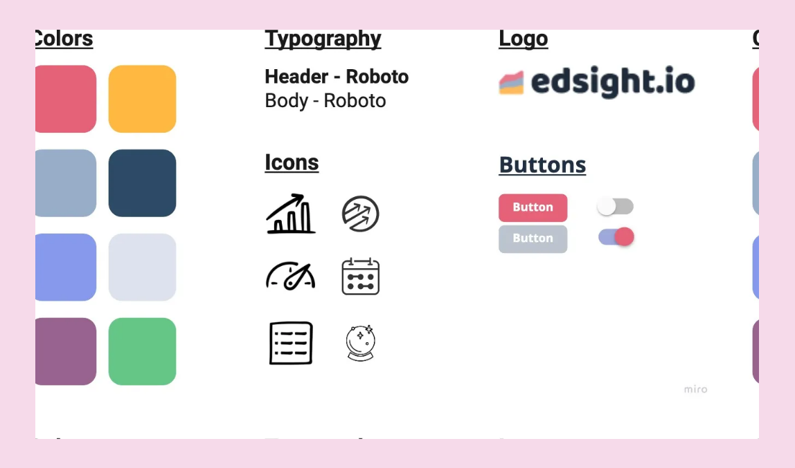
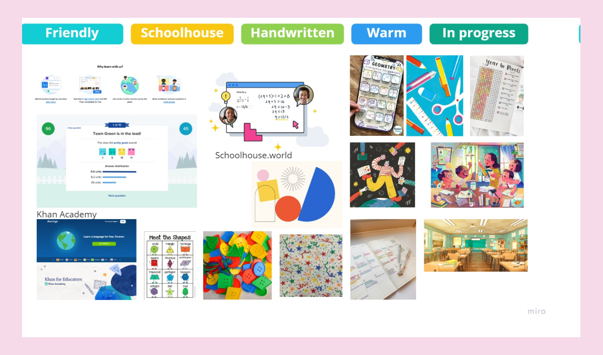
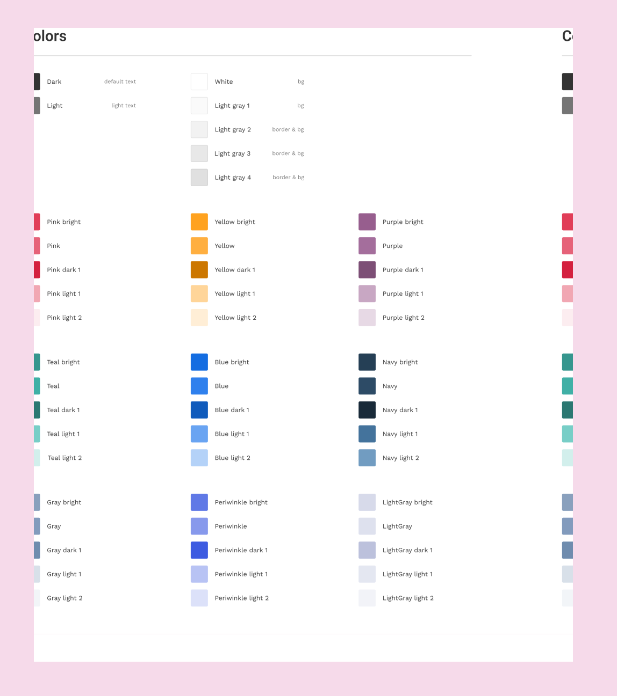
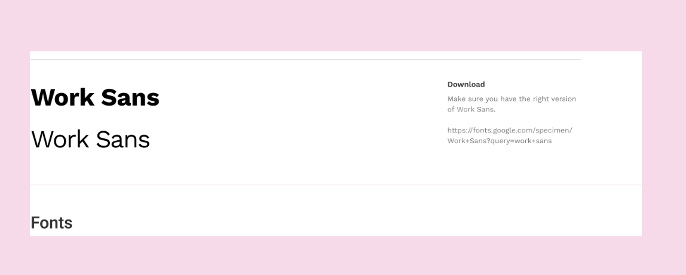
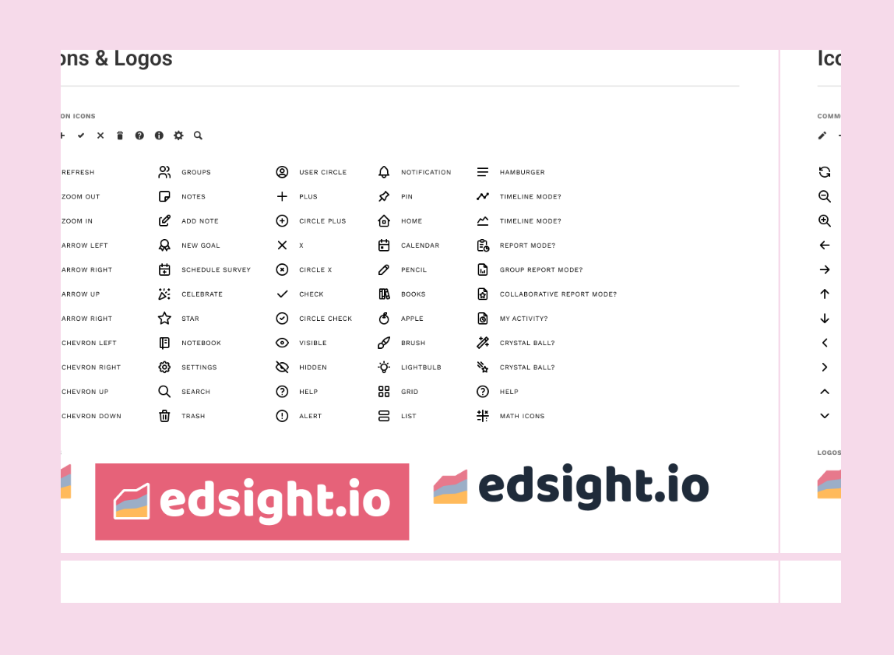
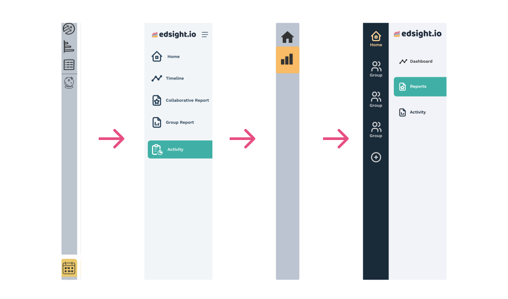
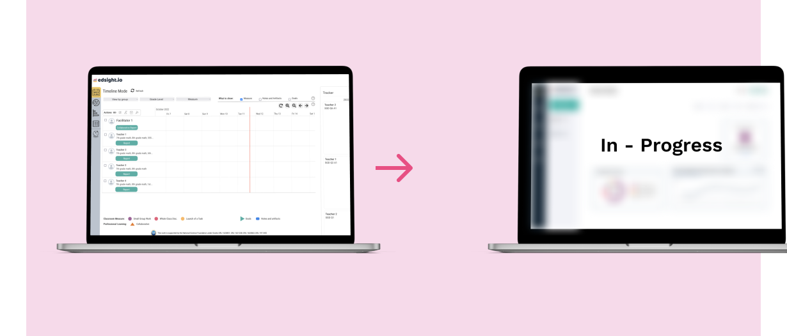
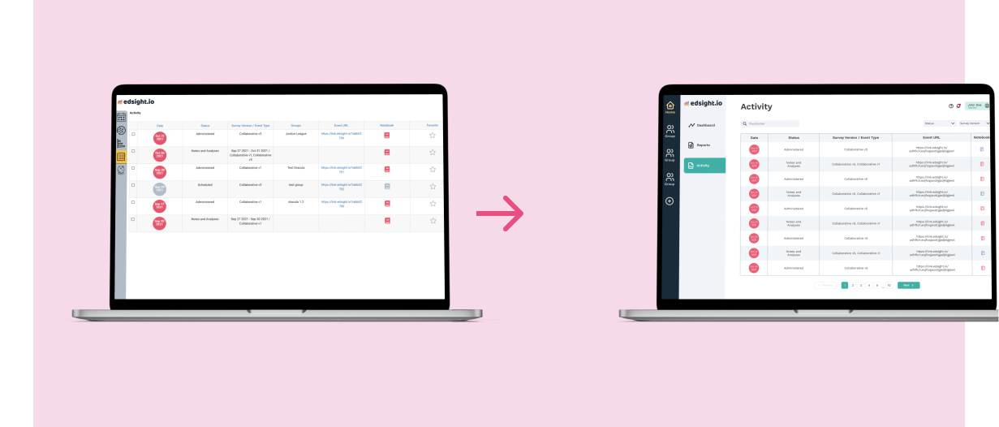
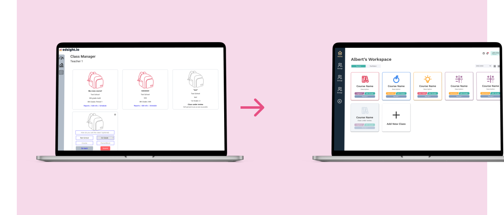

🍎 Creating Edsight 2.0's Design System
Project Overview
Design and Partnership Lab
Duration: 10 weeks
Role: UX Researcher
The Design Team: Jessica Cai, Karla Avalos, Minh Nguyen, Isabel Pham
Purpose: Finding an easier way to display information for teachers in an understandable and usable manner.
Context
We are the Edsight design team at the UC Irvine Design and Partnership Lab (daplab). At the daplab, we co-design (a participatory approach to designing solutions, in which community members are treated as equal collaborators in the design process) interactive learning tools with community partners and study how we can improve learning and education. As the design team for Edsight, our job is to ensure each interface is accessible and consistent in design.
What is Edsight?
Edsight is a free data analytics platform designed to assist educators in improving their teaching pedagogy (specifically for middle school math courses) through data and reflection. Edsight is designed to collect meaningful data of instructional practices and communicate trends to educators thus facilitating conversations around pedagogical improvements for teachers, coaches, and district leaders.
It is part of a broader initiative called PMR2, which is a multi-year research-practice partnership between university researchers and school district partners across the United States to develop a system of practical measures, routines, and representations to support the implementation of instructional improvement strategies in middle-school mathematics.
Why Edsight needed a Design System
When we started out, the original version of Edsight was up and running but without a design system - a design system is a comprehensive set of standards intended to manage design at scale using reusable components and patterns¹. The absence of a design system for Edsight proved to be a significant problem when we attempted to iterate on designs. We noticed in the designs, there were issues of consistency, which decreased the coherence of the platform. To resolve these issues, we spent some time developing an accessible and well-thought out design system for Edsight.
Our Process
As we sat down as a team and began our brainstorming process, we took inspiration from the original Edsight webpage, created style tiles from our observations, and then created a mood board to outline our new thoughts and ideas for our design system.
Style tiles helped us identify the visual brand of our website
Challenges
Since we decided to build our design system from scratch, we looked into other established design systems to get a better understanding of how a design system can be useful while designing. Throughout this process we learned how to organize our design system and the essential components of a design system. We also took note of how design systems reflected a company’s core values and identity through different component styles. Some of the design systems we looked at included Airbnb, Lyft, Meta, and Stanley Black & Decker.
Redefining the Edsight brand
To establish the major themes and style of our design system, we created a mood board to collect inspiration and help brainstorm different ideas. From our brainstorming sessions, we identified a few key pillars for our design system: friendly, schoolhouse, handwritten, warm, and in progress.
Our mood board for Edsight 2.0
With Edsight being a tool for teachers to use in the classroom, we wanted to make sure that our design system reflected the aesthetics and atmosphere of a classroom. We took inspiration from different items typically found in a classroom to identify a few of our themes. Additionally, we modeled our mood board after PMR2’s practical measures. A key feature of Edsight is that it is “NOT meant to be used for accountability or high-stakes, evaluation purposes”, so this inspired our in progress pillar, as we wanted our design system to feel more casual and low pressure.
Additionally, we also looked at other education softwares, such as Khan Academy and Schoolhouse.world for modern inspiration. By doing so, we were able to create a comprehensive mood board to guide us throughout the creation of our design system.
Key Insights We Learned
A key point of emphasis we kept in mind while building our design system was accessibility. We wanted to ensure that users with different backgrounds will be able to easily interact with our software. We focused on testing the color contrast for our brand colors using Coolor’s color contrast checker to make sure we had sufficient contrast across all of our components. This allows users to differentiate between different components. Additionally, we focused on choosing a font that has easily distinguishable height differences and characters so that it is readable in different contexts.
I. Typography
We did not realize certain typeface displays letters in a way that may decrease clarity and legibility. For instance, some typefaces display the letters “O” and “0” or capitalized “I” and “L” similarly, causing readers to mistake them for each other. Keeping this in mind, we decided to pick the Work Sans as it distinguishes these similarities, increasing legibility and readability while maintaining our brand.
II. Color
Additionally, we picked out colors to match our branding while making sure there is enough color contrast between them. One thing we wanted to improve on was making our product accessible to color-blind users. To apply this accessibility practice, we put our colors in a color-blindness checker. We realize that red and greens are similar for color-blind users, and taking note of that, we decided to make sure we do not use these two colors together when designing our application.
Edsight 2.0
Color
When selecting our new color palette, we had two main items in mind: accessibility & brand colors. We wanted to make sure the colors were distinct enough from each other to uphold the standard for common color blindness tests while having a high enough color contrast ratio with our background. We tested various color combinations prior to settling on our 9 main colors.
Edsight’s new color pallete
Typography
When selecting typography, we championed clarity. We compared o to 0 and I to l to 1 for legibility and distinguishability, before settling on the Work Sans font. In the comparisons of often mistaken characters, we looked for how distinguishable these characters were from each other to assess clarity. The Work Sans font ultimately had the clearest readability since it ensured each character was distinct and legible.
Edsight’s new font style, Work Sans
Icons
When choosing icons for our branding, we focused on two aspects: simple designs with recognizable imagery to help users intuitively understand what each icon represents.
Icon credit: Tabler Icons
Navigation Bar
Our navigation bar underwent many iterations before we settled on this current design. The main purpose of the navigation bar is to allow the user to move easily between different classes and navigate to their desired location. The expandable doubled navigation bar provides flexibility without losing the ease of access.
Each navigation tab has an icon and text associated with it to avoid miscommunication and allow users to directly know what each tab represents. We found that icons alone can leave users wondering what the tab represents and ultimately make the navigation process harder and more time-consuming. Therefore, by adding simple text describing the page, the understandability of the tab navigation increases drastically.
The evolution of Edsight’s navbar
Animations
For our animation designs, we used simple designs that could easily be identified as symbols for loading. Progress bars and loading dots are often associated with loading screens so users will be able to recognize these two concepts and more easily identify them as loading animations. In addition, they are colored with our branding’s color palette and fit to the minimalist theme. We used the Lottie extension in Adobe After Effects to export our animation designs.
Implementing our design system
Timeline Page
For our redesign of the timeline page, we focused on reducing the visual noise and creating a more simplistic view. If the user is presented with too much information all at once, it can seem overwhelming and push users to be less inclined to use the platform. Therefore, by presenting information in a more minimal way: combining smaller details, removing less relevant information, and using whitespace to show separation, the audience will be able to more easily digest the information presented on this page.
Before and after of the Timeline page, still in progress
Activity List Page
When redesigning the activity page, we kept in mind our target audience and usability. To optimize the functionality of the page, we decided to create a simpler view that would be easier for users to understand and navigate at a much quicker rate. The search and filter option was specifically modified to a more simplistic system for increased usability
Before and after of the Activity List page
Class Manager Page
The redesigned Class Manager page uses color coordination and associated logos to help make courses easier to identify. In addition, classes can easily be added using a module, simplifying the process by keeping everything on the same page, rather than navigating away.
Before and after of the Class Manager page
Lessons Learned
1. Keep Human Centered Design practices into account when implementing our ideas into the mockups.
We were assigned weekly readings with topics that relate to improving the education systems, which we have applied the concepts we learned into our design process in hopes of improving the Edsight. A key practice we applied to our work is human-centered design. The first step is to understand the problem instead of jumping to create solutions. Since we are designing a product that would be used for teachers and instructional coaches, focusing on issues of cognitive load, attention, human perception, and data literacy would be beneficial in creating better experiences for users who often work collaboratively, have busy days with little structured time for reflection, and need to quickly pick up new tools.
2. Accessibility needs to be carefully considered in all design choices.
Our main goal was to keep accessibility in consideration throughout our design decisions to increase the user’s experiences when using Edsight. Initially, we understood that it is important to consider accessibility, but we did not realize how much small decisions matter. To expose ourselves to more accessibility practices, we read articles relating to this topic and realized that elements like typography and colors, even though they may be minor decisions to us, may cause a huge constraint and have a negative impact on potential users.
3. Communication between designers is important to maintain consistency even with a design system.
To keep things consistent, we have created a design system to manage our components, color, and text, allowing other designers to use the same elements throughout the design. Although we have a set design system, we ran into inconsistency issues when designing. A problem we ran into was not specifying the amount of spacing between cards and headers. Instead of assuming and estimating the spacing between these elements, we caught this early on and communicated the amount of spacing we should have between these elements. As projects get larger, it is common to miss elements in the initial planning process. Rather than having a lot to fix later, we minimize the number of changes by catching these missing elements, fixing them early on, and saving time in the long run.
What's Next?
1. Get feedback on current designs.
Although the designs are fully fleshed out, we want to create the best experiences for our users. We plan to iterate with the feedback from researchers and former teachers we get from the design, making our designs as intuitive as possible.
2. Start implementing consistent and accessible designs in React.
Transitioning to develop our designs, we plan to expand our team and include developers in the process of creating consistent and accessible products. With the team expanding, it may take more time for the developers to learn the consistency and accessibility concepts. Additionally, we want to explore more accessibility features that would potentially increase inclusivity for beyond users of colorblindness, such as users with difficult hearing or age-related barriers for Edsight.
Thanks for stopping by 🌷